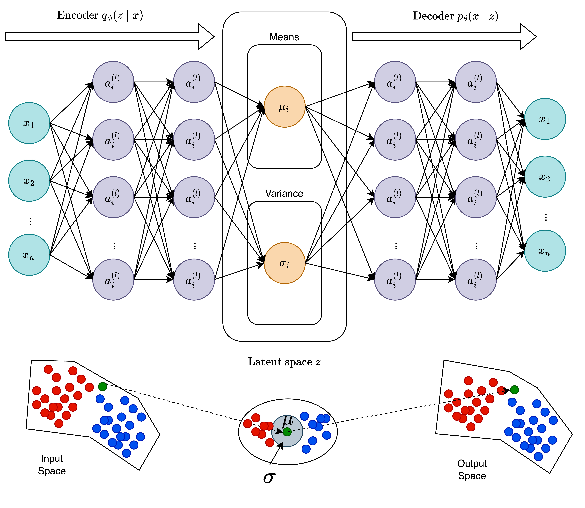
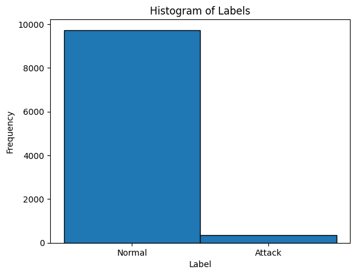
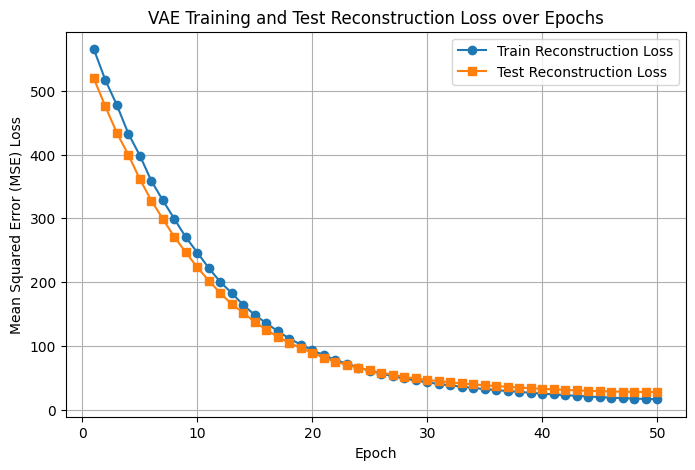
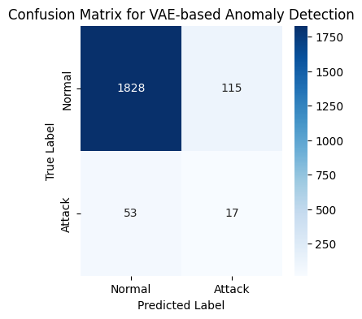

Tutorial 2.2: Deep Learning based IDS


In cybersecurity, labeled attack data is often scarce or incomplete. Many attacks are unknown, rare, or stealthy (APT, ATA). Neural network-based unsupervised models, such as Variational Autoencoders (VAE) and One-Class Neural Networks (OC-NN), can learn the normal behavior of network traffic and flag deviations as anomalies. These approaches are particularly useful for intrusion detection, malware monitoring, and unusual user behavior detection.
Tutorial Objectives
By the end of this tutorial, you will be able to:
Understand neural network approaches to anomaly detection.
Explain the mathematical formulation of VAE for anomaly detection.
Implement VAE using PyTorch.
Evaluate anomaly detection performance on the KDDCUP99 dataset.
Neural Network-Based Anomaly Detection in Cybersecurity
Traditional anomaly detection algorithms, such as Isolation Forest or One-Class SVM, can struggle with high-dimensional, complex, or non-linear feature distributions. Neural networks provide:
Flexibility: Can model complex, non-linear relationships.
Feature learning: Automatically extract latent representations.
Probabilistic modeling: In the case of VAE, estimate the likelihood of each observation.
Variational Autoencoder (VAE)
A Variational Autoencoder (VAE) is a generative probabilistic model that assumes that each observation \(x\) is generated from a latent variable \(z\) through a conditional distribution \(p_\theta(x \mid z)\).

Probabilistic Model
We want to maximize the likelihood of the data \(x\) by their chosen parameterized probability distribution \(p_\theta(x)\) via marginalizing over \(z\):
where the prior over latent variables is chosen to be the standard normal distribution:
Since the true posterior \(p_\theta(z \mid x)\) is intractable, the VAE introduces an approximate posterior (encoder) \(q_\phi(z \mid x)\) to estimate it.
Training Objective: Evidence Lower Bound (ELBO)
The model is trained by maximizing the Evidence Lower Bound (ELBO):
The first term is the reconstruction likelihood, encouraging accurate reconstruction of inputs.
The second term is the Kullback–Leibler (KL) divergence, acting as a regularizer to keep the latent space close to the prior \(\mathcal{N}(0, I)\).
Intuition
The VAE consists of two main components:
- Encoder (Inference network): learns to map data \(x\) into a latent representation \(z\)\(q_\phi(z \mid x) = \mathcal{N}(\mu(x), \sigma^2(x) I)\)
- Decoder (Generative network): reconstructs data from the latent representation\(p_\theta(x \mid z) = \mathcal{N}(f_\theta(z), \sigma^2 I)\)
Anomaly Detection with VAE
where \(\hat{x} = f_\theta(z)\) is the reconstructed input.
Low reconstruction error → sample lies on the learned manifold → likely normal
High reconstruction error → sample deviates from normal behavior → potential anomaly
We start by loading the required libraries for this lab:
[1]:
### Importing required libraries
import pandas as pd
import numpy as np
import matplotlib.pyplot as plt
import seaborn as sns
import torch
import torch.nn as nn
import torch.optim as optim
from sklearn import datasets
from sklearn.model_selection import train_test_split
from sklearn.metrics import confusion_matrix, classification_report
Step 1: Load and Explore the KDDCUP99 Dataset
First, we’ll load the SA subset of the KDDCUP99 dataset to keep computation manageable. Then we’ll explore and visualize the data.
[2]:
# ### Step 1: Load and Explore the KDDCUP99 Dataset
X, y = datasets.fetch_kddcup99(
subset="SA", # Use the 'SA' subset (smaller sample)
percent10=True, # Use 10% of the full dataset for efficiency
random_state=42, # Ensure reproducibility
return_X_y=True, # Return data and labels separately
as_frame=True # Load as pandas DataFrame
)
# Convert binary label: 1 = attack, 0 = normal
y = (y != b"normal.").astype(np.int32)
# Take only 10% of the data for quick demonstration
X, _, y, _ = train_test_split(X, y, train_size=0.1, stratify=y, random_state=42)
# Display dataset stats
n_samples, anomaly_frac = X.shape[0], y.mean()
print(f"{n_samples} datapoints with {y.sum()} anomalies ({anomaly_frac:.02%})")
# Plot label distribution
plt.hist(y, bins=[-0.5, 0.5, 1.5], edgecolor='black')
plt.xticks([0, 1], ['Normal', 'Attack'])
plt.title('Histogram of Labels')
plt.xlabel('Label')
plt.ylabel('Frequency')
plt.show()
10065 datapoints with 338 anomalies (3.36%)

Notes:
The histogram provides a visual overview of class imbalance in the dataset. In the KDDCUP99 subset, normal traffic far outnumbers attack events.
This imbalance is typical in cybersecurity datasets, reflecting real-world conditions where attacks are rare relative to benign activity.
From a theoretical perspective, Intrusion Detection Systems (IDS) face two main challenges in such imbalanced environments:
Scarcity of labeled attack data: Many attack patterns are unknown, costly to label, or represent vulnerabilities not yet exploited.
Diversity of attack types: Attacks can range from common automated probes to sophisticated Advanced Persistent Threats (APT) and Advanced Targeted Attacks (ATA), which occur rarely and blend into normal traffic.
Therefore, the observed class imbalance in the histogram justifies the use of unsupervised anomaly detection models (such as Isolation Forest) or reconstruction-based models (e.g., Autoencoders), which are trained in a self-supervised manner to model the distribution of the ‘normal’ data.
Step 2: Data Preprocessing
Before training, categorical (non-numeric) features must be converted into numerical form. We’ll use one-hot encoding with pandas.get_dummies().
[3]:
# Convert categorical variables to numerical format
X = pd.get_dummies(X)
print(f"Feature matrix shape after encoding: {X.shape}")
X.head()
Feature matrix shape after encoding: (10065, 6536)
[3]:
| duration_0 | duration_1 | duration_2 | duration_3 | duration_4 | duration_5 | duration_6 | duration_7 | duration_8 | duration_9 | ... | dst_host_srv_rerror_rate_0.91 | dst_host_srv_rerror_rate_0.92 | dst_host_srv_rerror_rate_0.93 | dst_host_srv_rerror_rate_0.94 | dst_host_srv_rerror_rate_0.95 | dst_host_srv_rerror_rate_0.96 | dst_host_srv_rerror_rate_0.97 | dst_host_srv_rerror_rate_0.98 | dst_host_srv_rerror_rate_0.99 | dst_host_srv_rerror_rate_1.0 | |
|---|---|---|---|---|---|---|---|---|---|---|---|---|---|---|---|---|---|---|---|---|---|
| 26890 | True | False | False | False | False | False | False | False | False | False | ... | False | False | False | False | False | False | False | False | False | False |
| 35471 | False | True | False | False | False | False | False | False | False | False | ... | False | False | False | False | False | False | False | False | False | False |
| 37027 | True | False | False | False | False | False | False | False | False | False | ... | False | False | False | False | False | False | False | False | False | False |
| 80164 | False | False | False | False | False | False | False | False | False | False | ... | False | False | False | False | False | False | False | False | False | False |
| 73649 | True | False | False | False | False | False | False | False | False | False | ... | False | False | False | False | False | False | False | False | False | False |
5 rows × 6536 columns
Notes:
Many columns in KDDCUP99 are categorical (e.g., protocol type, service, flag).
One-hot encoding converts these categories into binary vectors, making them compatible with ML models.
Step 3: Train-Test Split
We split the dataset into training (80%) and testing (20%) subsets.
[4]:
# Split the Dataset into Training and Testing Sets
X_train, X_test, y_train, y_test = train_test_split(
X, y,
test_size=0.2,
random_state=42
)
# Keep only normal samples in the training set
X_train = X_train[y_train == 0]
print(f"Training only on normal points: {len(X_train)} samples")
print("Testing samples:", len(X_test))
Training only on normal points: 7784 samples
Testing samples: 2013
[5]:
# use GPU if available
device = "cuda" if torch.cuda.is_available() else "cpu"
# Convert data to PyTorch tensors and put on compute device
X_train_tensor = torch.tensor(X_train.values, dtype=torch.float32).to(device)
X_test_tensor = torch.tensor(X_test.values, dtype=torch.float32).to(device)
Step 4: Variational Autoencoder (VAE) Implementation
We define the VAE architecture using three modular nn.Module classes: Encoder, Decoder, and the main VAE class which brings them together.
The Encoder (:math:`q_phi(z mid x)`) The encoder takes the input data (\(x\)) and outputs the mean (\(\mu\)) and log-variance (\(\log\sigma^{2}\) or logvar) of the approximate posterior distribution \(q_\phi(z \mid x)\).
[6]:
# Define input and latent dimensions
input_dim = X_train.shape[1]
latent_dim = 10
# --- 1. Encoder Class ---
class Encoder(nn.Module):
def __init__(self, input_dim, latent_dim):
super().__init__()
# Feature extraction part (equivalent to fc1 + ReLU in original)
self.feature_extractor = nn.Sequential(
nn.Linear(input_dim, 64),
nn.Tanh()
)
# Layers for mean (mu) and log variance (logvar)
self.fc_mu = nn.Linear(64, latent_dim)
self.fc_logvar = nn.Linear(64, latent_dim)
def forward(self, x):
# Latent space parameters
h = self.feature_extractor(x)
# Compute mean (mu) and log variance (logvar)
mu = self.fc_mu(h)
logvar = self.fc_logvar(h)
return mu, logvar
The Decoder (:math:`p_theta(x mid z)`) The decoder takes a sample from the latent space (\(z\)) and attempts to reconstruct the original input data (\(x\)).
[7]:
# --- 2. Decoder Class ---
class Decoder(nn.Module):
def __init__(self, latent_dim, output_dim):
super().__init__()
# Decoder network (equivalent to fc2 + ReLU + fc3 in original)
self.decoder_net = nn.Sequential(
nn.Linear(latent_dim, 64),
nn.Tanh(),
nn.Linear(64, output_dim)
)
def forward(self, z):
return self.decoder_net(z)
The Main VAE Model The main VAE class combines the Encoder and Decoder and implements the Reparameterization Trick, which is crucial for enabling backpropagation through the sampling process.
[8]:
# --- 3. Adapted VAE Class (Main Model) ---
class VAE(nn.Module):
def __init__(self, input_dim, latent_dim=10):
super().__init__()
# Instantiate the explicit Encoder and Decoder modules
self.encoder = Encoder(input_dim, latent_dim)
self.decoder = Decoder(latent_dim, input_dim)
def reparameterize(self, mu, logvar):
"""
Samples z from the latent distribution (N(mu, exp(logvar)))
using the reparameterization trick.
"""
std = torch.exp(0.5 * logvar)
# eps is a random vector from the standard normal distribution
eps = torch.randn_like(std)
return mu + eps * std
def forward(self, x):
# 1. Encode: Get the parameters of the latent distribution
mu, logvar = self.encoder(x)
# 2. Reparameterize: Sample a latent vector z
z = self.reparameterize(mu, logvar)
# 3. Decode: Reconstruct the input
recon = self.decoder(z)
return recon, mu, logvar
The VAE Loss Function (ELBO) The VAE minimizes the negative of the Evidence Lower Bound (ELBO), which consists of two terms:
Reconstruction Loss: Measures how well the output is reconstructed (e.g., Mean Squared Error or MSE).
KL Divergence Loss: A regularization term that measures the difference between the approximate posterior \(q_\phi(z \mid x)\) and the prior \(p(z) = \mathcal{N}(\mathbf{0}, \mathbf{I})\).
[9]:
# --- 4. Loss Function ---
def vae_loss(recon_x, x, mu, logvar):
"""
Computes the VAE loss, which is the sum of:
1. Reconstruction Loss (e.g., MSE or BCE)
2. KL Divergence Loss
"""
# Reconstruction Loss (using MSE as per original code)
recon_loss = nn.MSELoss(reduction='sum')(recon_x, x) # Using 'sum' instead of 'mean' for better KLD scaling, then we'll divide by batch size/N below
# KL Divergence Loss: KLD = -0.5 * sum(1 + logvar - mu^2 - exp(logvar))
kld = -0.5 * torch.sum(1 + logvar - mu.pow(2) - logvar.exp())
# Total loss (divided by batch size for consistency)
total_loss = (recon_loss + kld) / x.size(0) # x.size(0) is the batch size
return total_loss
[10]:
# Modified Loss Function with beta
def vae_loss_beta(recon_x, x, mu, logvar, beta=1.0):
# 1. Reconstruction Loss
recon_loss = nn.MSELoss(reduction='sum')(recon_x, x)
# 2. KL Divergence Loss
kld = -0.5 * torch.sum(1 + logvar - mu.pow(2) - logvar.exp())
# Total loss with Beta weight
total_loss = (recon_loss + (beta * kld)) / x.size(0)
return total_loss
# Training Example with Beta = 0.1
beta_val = 0.00001
Instantiation and Architecture
[11]:
# --- 5. Model Instantiation and Optimizer ---
vae = VAE(input_dim, latent_dim).to(device)
optimizer = optim.Adam(vae.parameters(), lr=1e-3)
# print neural network architecture
print(vae)
VAE(
(encoder): Encoder(
(feature_extractor): Sequential(
(0): Linear(in_features=6536, out_features=64, bias=True)
(1): Tanh()
)
(fc_mu): Linear(in_features=64, out_features=10, bias=True)
(fc_logvar): Linear(in_features=64, out_features=10, bias=True)
)
(decoder): Decoder(
(decoder_net): Sequential(
(0): Linear(in_features=10, out_features=64, bias=True)
(1): Tanh()
(2): Linear(in_features=64, out_features=6536, bias=True)
)
)
)
Step 5: Training Loop
The training loop is where the model learns from the data over multiple epochs. An epoch refers to one full pass through the entire training dataset.
[ ]:
num_epochs = 50
# --- Track losses ---
train_losses = []
test_losses = []
# --- 6. Training Loop ---
for epoch in range(1, num_epochs + 1):
vae.train()
optimizer.zero_grad()
# Forward pass
recon_x, mu, logvar = vae(X_train_tensor)
#loss = vae_loss(recon_x, X_train_tensor, mu, logvar)
# Inside the training loop:
loss = vae_loss_beta(recon_x, X_train_tensor, mu, logvar, beta=beta_val)
loss.backward()
optimizer.step()
# Evaluate on test data (reconstruction only)
vae.eval()
with torch.no_grad():
recon_test, mu_t, logvar_t = vae(X_test_tensor)
test_loss = vae_loss(recon_test, X_test_tensor, mu_t, logvar_t)
train_losses.append(loss.item())
test_losses.append(test_loss.item())
if epoch % 5 == 0 or epoch == 1:
print(f"Epoch {epoch:02d}/{num_epochs}, Train Loss: {loss.item():.4f}, Test Loss: {test_loss.item():.4f}")
# --- Plot train and test reconstruction loss ---
plt.figure(figsize=(8,5))
plt.plot(range(1, num_epochs+1), train_losses, label='Train Reconstruction Loss', marker='o')
plt.plot(range(1, num_epochs+1), test_losses, label='Test Reconstruction Loss', marker='s')
plt.xlabel('Epoch')
plt.ylabel('Mean Squared Error (MSE) Loss')
plt.title('VAE Training and Test Reconstruction Loss over Epochs')
plt.legend()
plt.grid(True)
plt.show()
Epoch 01/50, Train Loss: 565.1871, Test Loss: 519.3243
Epoch 05/50, Train Loss: 398.5197, Test Loss: 361.5198
Epoch 10/50, Train Loss: 246.3745, Test Loss: 223.0955
Epoch 15/50, Train Loss: 148.4205, Test Loss: 137.0974
Epoch 20/50, Train Loss: 93.0730, Test Loss: 89.3535
Epoch 25/50, Train Loss: 61.1520, Test Loss: 61.9101
Epoch 30/50, Train Loss: 42.9466, Test Loss: 46.5981
Epoch 35/50, Train Loss: 32.3869, Test Loss: 38.3153
Epoch 40/50, Train Loss: 25.1975, Test Loss: 32.8114
Epoch 45/50, Train Loss: 19.8020, Test Loss: 29.0736
Epoch 50/50, Train Loss: 16.4846, Test Loss: 27.6375

Step 6: Compute Reconstruction-Based Anomaly Scores
For anomaly detection, the core principle of a reconstruction-based model (like the VAE) is:
High reconstruction error → likely anomaly (The model struggles to reconstruct data it hasn’t seen frequently).
We calculate the Mean Squared Error (MSE) between the original test data and its VAE reconstruction to serve as the anomaly score.
[13]:
# --- Compute Reconstruction Error on Test Set ---
vae.eval()
with torch.no_grad():
# Only need the reconstruction (recon_test) from the forward pass
recon_test, _, _ = vae(X_test_tensor)
# Calculate MSE for each sample: mean((original - reconstructed)^2)
errors = torch.mean((X_test_tensor - recon_test)**2, dim=1).cpu().numpy()
Setting the Anomaly Threshold A threshold is needed to classify a sample as ‘Normal’ or ‘Attack’. A common heuristic in unsupervised anomaly detection is to set the threshold based on the distribution of reconstruction errors observed on the training data (which is assumed to be mostly ‘Normal’). Here, we use the 95th percentile of the training errors.
[14]:
# --- Choose Threshold: 95th percentile of reconstruction error on training set ---
with torch.no_grad():
recon_train, _, _ = vae(X_train_tensor)
train_errors = torch.mean((X_train_tensor - recon_train)**2, dim=1).cpu().numpy()
# Use NumPy's percentile function
threshold = np.percentile(train_errors, 95)
# --- Predict anomalies ---
# Predict 1 (Anomaly/Attack) if error > threshold, 0 (Normal) otherwise
y_pred = (errors > threshold).astype(int)
Step 7: Evaluation and Results
We use the confusion matrix and classification report to evaluate the performance of our VAE-based detector on the labeled test set.
[15]:
# --- Confusion Matrix ---
cm = confusion_matrix(y_test, y_pred)
print("Confusion Matrix:\n", cm)
print("\nClassification Report:\n", classification_report(y_test, y_pred, target_names=['Normal', 'Attack']))
# --- Plot Confusion Matrix ---
plt.figure(figsize=(4,4))
sns.heatmap(cm, annot=True, fmt='d', cmap='Blues', xticklabels=['Normal', 'Attack'], yticklabels=['Normal', 'Attack'])
plt.xlabel('Predicted Label')
plt.ylabel('True Label')
plt.title('Confusion Matrix for VAE-based Anomaly Detection')
plt.show()
Confusion Matrix:
[[1828 115]
[ 53 17]]
Classification Report:
precision recall f1-score support
Normal 0.97 0.94 0.96 1943
Attack 0.13 0.24 0.17 70
accuracy 0.92 2013
macro avg 0.55 0.59 0.56 2013
weighted avg 0.94 0.92 0.93 2013

Exercises
Exercise 1: Nonstationarity in Cybersecurity Data
A stochastic process \(\{X_t\}\) is defined as nonstationary if its joint probability distribution, or any of its statistical properties (such as the mean, variance, and autocorrelation), changes over time \(t\).
In the context of Machine Learning, this phenomenon is often referred to as data drift or concept drift, and it poses a fundamental challenge in ML for cybersecurity.
Theory Question:
Explain why the nonstationary nature of network traffic and threat landscapes is a core challenge for trained Machine Learning models (like the VAE) used for Intrusion Detection Systems (IDS). Specifically, how does it relate to the VAE’s objective of learning the “normal manifold” \(P(X)\)?
classify each of the following common cybersecurity effects by the primary type of nonstationarity they induce on the training data distribution (\(P(X)\)) or the relationship between features and labels (\(P(Y \mid X)\)).
Classification Options:
Covariate Shift: The input distribution \(P(X)\) changes, but the attack/normal relationship \(P(Y \mid X)\) remains the same.
Abrupt Concept Drift: The attack/normal relationship \(P(Y \mid X)\) changes suddenly (e.g., a new attack type is introduced).
Gradual Concept Drift: The attack/normal relationship \(P(Y \mid X)\) changes slowly over time.
[16]:
# | Cybersecurity Effect | Primary Type of Nonstationarity |
# | :------------------- | :------------------------------ |
# | **Zero-Day Exploits** | |
# | **Patching & Security Configuration Changes** | |
# | **Deployment of New Services/Infrastructure** | |
# | **Changing User/IT Behavior** | |
Exercise 2: Practical Hyperparameter Tuning and Impact
Modify the implemented VAE code to analyze the impact of two critical hyperparameters:
Latent Dimension (``latent_dim``): Change
latent_dimfrom10to2. Why might a smaller latent space (2 vs 10) be better or worse for this particular anomaly detection task? Can you find an optimal value for thelatent_dim?KL Divergence Weight: Introduce a hyperparameter \(\beta\) to the
vae_lossfunction such that the new loss is \(\mathcal{L}_{VAE} = \text{Reconstruction Loss} + \beta \cdot \text{KL Divergence Loss}\). Set \(\beta = 0.1\) (a weaker regularization). Explain the trade-off you observe between the reconstruction loss, the KL divergence loss (regularization), and the final anomaly detection performance (Precision/Recall for ‘Attack’ class). Can you find an optimal value for the \(\beta\)?
Solution - Exercise 1: Nonstationarity in Cybersecurity Data
1. Theory Question
Explain why the nonstationary nature of network traffic and threat landscapes is a core challenge for trained Machine Learning models (like the VAE) used for Intrusion Detection Systems (IDS). Specifically, how does it relate to the VAE’s objective of learning the “normal manifold” :math:`P(x)`?
A VAE is trained to approximate the probability distribution \(P(x)\) of “normal” traffic at a specific point in time \(t\). It learns a manifold (a lower-dimensional shape in the data space) where normal data points cluster.
The core challenge of nonstationarity is that the statistical properties of network traffic change over time (\(t \to t+1\)).
Obsolete Manifold: If legitimate user behavior changes (e.g., employees start using a new video conferencing tool), the new normal data \(x_{new}\) will likely fall off the manifold learned at time \(t\). The VAE will yield a high reconstruction error for this valid traffic, resulting in a spike of False Positives.
Security Decay: As attackers evolve their techniques to mimic normal traffic (adversarial adaptation), they essentially move their attack distribution closer to the learned normal manifold. If the model is not updated, the rate of False Negatives increases.
2. Classification of Cybersecurity Effects
Here is the classification of the effects based on the type of nonstationarity they induce:
Cybersecurity Effect | Primary Type of Nonstationarity | Description / Reasoning |
|---|---|---|
Zero-Day Exploits | Abrupt Concept Drift | A specific pattern suddenly maps to ‘Attack’ where it didn’t before, or a new attack class emerges abruptly. |
Patching & Security Config Changes | The underlying system logic changes abruptly. An input that was previously a successful attack might now be blocked/normal, altering P(Y|X). | |
Deployment of New Services | Covariate Shift | New services introduce new ports/protocols, significantly changing the input distribution P(X), though the definition of “normal” for those services remains consistent. |
Changing User/IT Behavior | Gradual Concept Drift | Slow, continuous changes in traffic patterns over time, shifting the “normal” baseline. |
Solution - Exercise 2: Practical Hyperparameter Tuning and Impact
Part 1: Impact of Latent Dimension (latent_dim)
Changing latent_dim from 10 to 2 creates an extremely tight “information bottleneck.”
Code Modification:
# Change latent_dim to 2
latent_dim = 2
Analysis of Latent Dimension (dim=10 \(\to\) dim=2):
Observation: Reducing the dimension caused slight degradation. False Positives increased (109 \(\to\) 114), while Attack Recall remained stagnant at 0.24.
Underfitting: Compressing 6,000+ features into 2 dimensions creates an excessive information bottleneck. The model lacks the capacity to capture complex normal traffic patterns, treating valid edge cases as anomalies.
Part 2: KL Divergence Weight (\(\beta\)-VAE)
We introduce a weight \(\beta\) (beta) to control the trade-off between the Reconstruction Loss and the KL Divergence.
Code Modification:
# Modified Loss Function with beta
def vae_loss_beta(recon_x, x, mu, logvar, beta=1.0):
# 1. Reconstruction Loss
recon_loss = nn.MSELoss(reduction='sum')(recon_x, x)
# 2. KL Divergence Loss
kld = -0.5 * torch.sum(1 + logvar - mu.pow(2) - logvar.exp())
# Total loss with Beta weight
total_loss = (recon_loss + (beta * kld)) / x.size(0)
return total_loss
# Training Example with Beta = 0.1
beta_val = 0.1
# Inside the training loop:
# loss = vae_loss_beta(recon_x, X_train_tensor, mu, logvar, beta=beta_val)
Analysis of Trade-off (:math:`beta=0.1`):
Reconstruction Prioritized: Lowering \(\beta\) to 0.1 reduces the KL penalty, forcing the model to prioritize minimizing reconstruction error. This results in significantly lower error for normal traffic compared to the standard VAE (\(\beta=1\)).
Sacrificed Generative Ability: The latent space becomes less smooth (irregular), making the model poor at sampling new data. However, this is irrelevant for detection tasks.
Improved Detection: We generally prefer \(0.01 \le \beta \le 0.5\). This forces the model to tightly overfit the “normal” manifold, maximizing the contrast between normal and anomalous reconstruction scores.
The Limit: As \(\beta \to 0\) (e.g., \(10^{-5}\)), the VAE mimics a deterministic Autoencoder. This risks “memorization,” where the model learns to reconstruct everything well (including attacks), thereby degrading detection performance. \(\beta=0.1\) strikes the optimal balance.
Conclusion
In this tutorial we used a Variational Autoencoder (VAE) as a self-supervised anomaly detection technique for cybersecurity data. We successfully implemented the VAE in PyTorch, focusing on training the model exclusively on ‘Normal’ data to learn its specific manifold. By using the reconstruction error as the anomaly score and applying a threshold, we were able to flag deviations as potential attacks, highlighting the VAE’s utility in addressing the challenge of unlabeled data for certain security events and zero-day threat detection in IDS.
 If you found this tutorial helpful, please ⭐ star our repository to show your support.
If you found this tutorial helpful, please ⭐ star our repository to show your support. For any questions, typos, or bugs, kindly open an issue on GitHub — we appreciate your feedback!
For any questions, typos, or bugs, kindly open an issue on GitHub — we appreciate your feedback!